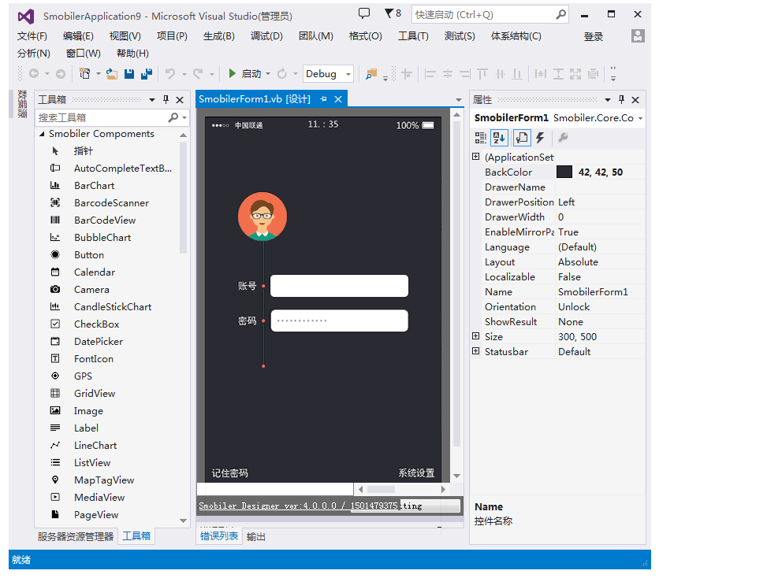
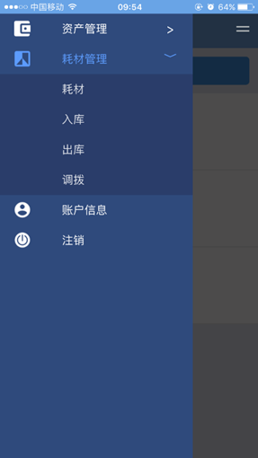
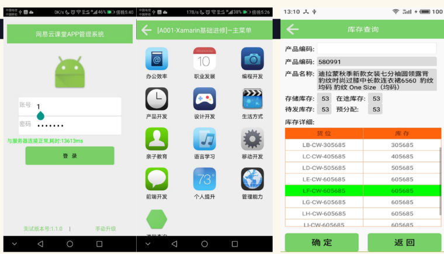
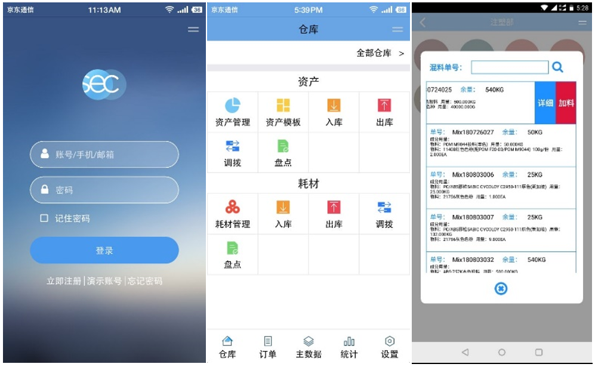

|
|
WinCE |
Android |
|
行业场景 |
扫描分拣、车载、工控 |
扫描分拣、车载定位 |
|
开发语言 |
C++、C# |
Java/.NET（Smobiler） |
|
开发环境 |
Visual Studio |
Android Studio/ Visual Studio（Smobiler） |
|
硬件 |
平板、手持机 |
平板、手持机 |
WinCE从1995年诞生至今，已有20多年的发展历史，行业成熟方案覆盖范围广，从车载、工控、手持机都有涉及，且方案成熟。
近些年，Android以后来居上的态势，逐渐渗透至各行业领域，硬件手持大厂也把产品线重心向Android手持迁移，基于Android的行业解决方案越来越成熟，WinCE的开发人才流失，在WinCE解决方案上吃老本的企业寻求转型。
拍脑门，招Android人才！学Android开发！不管是哪种转型，都需要付出时间或者费用成本的代价。现有的WinCE人才就不能继续利用他们在编程+行业知识的综合优势，继续在Android平台发挥价值吗？——答案是：可以的。
目前有两款基于.NET的APP开发平台，都是基于.NET框架，在Visual Studio环境中进行开发，一款是国外开发的Xamarin，后被微软收购，但因为并非“纯”依赖.NET技术（开发人员还需要掌握Java、object-C等技术），学习门槛不低，所以普及起来仍有困难。
另外一款是国内石磨科技团队开发的Smobiler，“纯”.NET开发，不需要配置Java等开发环境，安装Smobiler Designer后便可在Visual Studio中进行开发了。

Smobiler开发界面
Xamarin可进行游戏开发，画面精美，但伴随的是投入的成本和精力，与Xamarin不同的是，Smobiler更针对企业类型的应用开发。
企业类型的应用，例如MES、WMS、CRM、OA这类的系统，对界面和娱乐性要求不高，开发商更追求开发高效和应用稳定，Smobiler的开发方式和Winform一样，拖拽控件完成UI界面，开发人员可以把更多的精力放在业务逻辑代码的开发上。
在调用底层硬件上，Smobiler支持调用手机、手持的底层硬件，GPS、相机、扫描头、RFID、蓝牙等，包括但不限于这些底层的调用，都封装在Smobiler框架中，在开发时可直接调用。
Xamarin和Smobiler开发的应用对比图片：
左Xamarin-右Smobiler

左滑菜单 左Xamarin-右Smobiler


上Xamarin-下Smobiler
|
|
Xamarin |
Smobiler |
|
iOS和Android版本 |
得分别开发Android、iOS |
一次开发可同时生成Android、iOS两个版本 |
|
技能 |
C#、Java、object-C |
C#或VB.NET |
|
环境配置 |
Visual Studio、Java |
Visual Studio |
|
.NET开发者的上手周期 |
1~2周 |
1天 |
综合下来，Xamarin比较全面，不仅可以开发企业应用，还可以开发游戏等娱乐性要求较高的APP，但缺点就是对于.NET开发人员来说，学习门槛较高，开发过程比较繁琐。
Smobiler专攻企业移动应用，是专门从事企业ERP系统、执行系统开发的开发商们（传统的PC端ERP系统、WinCE系统开发商）寻求移动开发转型的秘密武器。
延申阅读
.NET（C#）能开发出什么样的APP？盘点那些通过Smobiler开发的移动应用
如何使用.net开发一款小而美的O2O移动应用？ ——“家庭小秘”APP介绍及采访记录
从一个点子到一个社区APP，是如何通过.NET实现的？——“文林物业系统”APP介绍及采访记录